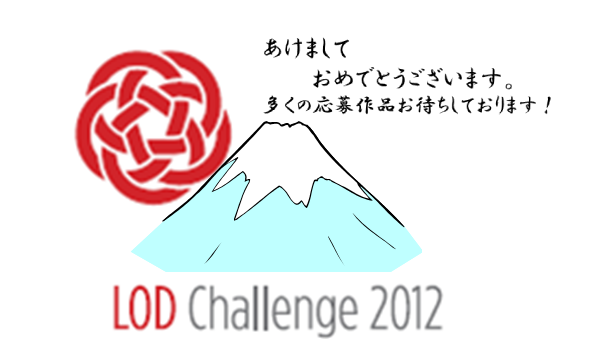
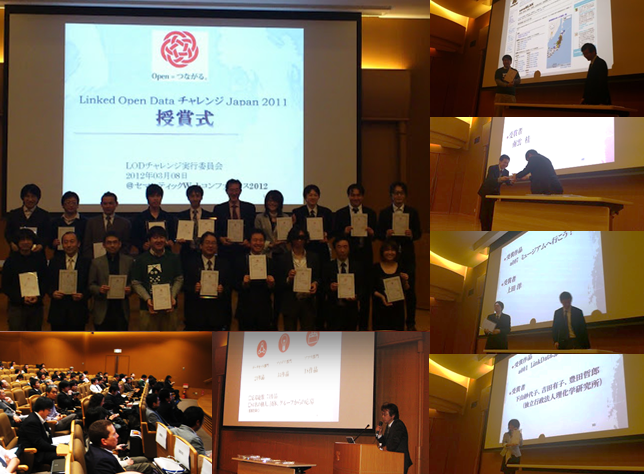

技術コラム第6回：昨今のオープンデータアイデアソン・ハッカソン、コンテストの広まりが目指すもの ～2012年の振り返りと2013年の展望～
2013年がスタートし、LODチャレンジ2012の作品応募〆切(2013年1月31日)まで一ヶ月を切りました。2012年は日本国内のオープンデータ活用に向けた機運や具体的な取り組みが大きく進展した年でした。2013年も1月12日のLODサロン（参加者募集中、登録は簡単ですのでLODサロン参加申し込み受付サイトからお早めに）を皮切りに、オープンデータ関連のイベントが目白押しです。今後、推進団体、政府・自治体に関連したイベントなどが多数開催され、オープンデータ活用が活性化されることは間違いないでしょう。
本コラム記事では筆者の知り得る範囲で、2012年までのコンテストやハッカソンなどを振り返るとともに、2013年に予定されているイベントを紹介しつつ、今後のオープンデータの展望を述べてみたいと思います。

LODチャレンジのはじまり(2011年)
2012年の振り返りの前に、LODチャレンジ2011が2012年3月まで続いていたこともあるため、その前年(2011年)の様子も簡単に振り返っておきたいと思います。
2011年の状況
LODチャレンジ実行委員会は2011年3月より本格的にLinked Open Dataのコンテスト開催に向けた活動を開始しました。2010年以前から開催の構想はあったもののきっかけが掴めずにいました。
しかし、既に海外では、EUで2011年4月から6月にかけてOpen Data Challengeという大きなコンテストが開催が決まっていました。また北米の都市（オタワ、ポートランド、ワシントンDC、ニューヨーク、サンフランシスコなど）では市民参加のデータ活用のアプリケーションコンテストなどが行われていました。2011年2月といった段階で How Open Data Initiatives Can Improve City Life というまとめ記事が出ています。そして米国のData.govや英国のdata.gov.ukによる政府データの公開が進みました。
オープンガバメントと直接関係しない領域でも、地理情報データ、ライフサイエンスデータ、メディアコンテンツなどのデータを再利用しやすい形で公開する取り組みが進んでいました。これはCKANというデータポータルに登録されたLinked Open Dataの個々のデータセットのつながりをを可視化したThe Linking Open Data cloud diagramが、2011年の時点でさまざまな分野のデータセットと密につながっている様子を示していることからもわかります。
LODチャレンジ2011
こうした状況下で、2011年3月8日のセマンティックWebコンファレンス2011で呼びかけを行ったところ、国内でも今、何かをやらなければという思いを持つメンバがLODチャレンジ2011 の実行委員として集いました。2011年は、オープンデータのコンテストに対して、一般の参加者からどのような反応があるのか全く未知の世界でした。正直なところ応募数0件という状況も覚悟していたのですが、昨年度(2011年度)の応募総数は73件といううれしい結果となりました。
上記の通り蓋を開けてみるまで結果はわからなかったのですが、後から振り返ってみると、これ以前に国内では国立情報学研究所の論文情報ナビゲータCiNiiの公開データを用いた「CiNii ウェブAPIコンテスト」が既に2年にわたって開催されていました。またLODチャレンジ2011への応援コメントをいただいた経済産業省の情報プロジェクト室でもオープンデータへの取り組みを進めており、国内でも関係者の中で取り組みの下地ができていたのだと思います。

2012年に入ると国内のオープンデータのイベント開催が相次ぐ
2012年の状況
具体的に一般の参加者を巻き込んだアイデアや活用事例の創出が始まりました。LODチャレンジも経済産業省、総務省の後援も含めて、約40もの企業・団体からのスポンサーやパートナー、サポーターとしてのご支援をいただき、前年度から勢いを増したオープンデータへの期待を感じずにはいられませんでした。
2012年の国内の活動の大きなうねりは、前年の大震災の影響もありました。2011年3月の東日本大震災で政府やその関連機関が公開したデータを利用したアプリケーションの価値を多くの人が理解しました。その一方、データ公開の方法がマシンリーダブルでなかったり、生データが充分に公開されていなかったりしているといった以前からの課題を、データを出す側も使う側も切実な問題として認識しました。復興支援でのHack For Japanの活躍は記憶に新しいと思いますが、日本でもデータを公開したり、活用することで社会貢献ができることが示されました。昨年度開催したLODチャレンジ2011でもそのような試みに対して賞をいくつか授与しています。LODチャレンジに記事を寄稿いただいている saveMLAK もその１つです。技術コラム 第1回：saveMLAKをご覧ください。
また、2012年7月4日に内閣に設置されている高度情報通信ネットワーク社会推進戦略本部(ＩＴ戦略本部)にて「電子行政オープンデータ戦略」が策定されたことは、イベント開催を含めたオープンデータの取り組みを加速させました。
2012年のオープンデータ関連のイベント
さて昨年2012年のオープンデータ関連のイベントですが、LODチャレンジサイトのイベント情報に掲載されているものでオープンデータをテーマにしているものや、筆者が参加したりお誘いを受けたりしたものからピックアップしてみるとかなりの数となり驚きました。参加者がイベントの中で、作品を作ったりアイデアや成果を発表したりする参加型のイベントを中心に選びましたが、その他、重要と思われるイベント（団体の設立総会など）についても記載しています。LODチャレンジも2011年2都市で計3回開催したLODチャレンジデーなるイベントを、2012年は5都市で計9回実施しています。
| 開催日 | 場所 | イベント名称 | 主催 | 備考 |
| 2012/1/21 | 東京都 | 第3回LODチャレンジデー in 東京 | LODチャレンジ実行委員会 | ※2011年度開催のLODチャレンジ2011の最終イベントとして実施 |
| 2012/3/8 | 東京都 | セマンティックWebコンファレンス2012(LODチャレンジ2011授賞式) | 慶應義塾大学SFC研究所 | ※LODチャレンジ2011の審査結果発表と授賞式 |
| 2012/5/31 | 東京都 | 公開シンポジウム「オープンデータが拓く未来 ～動き出した日本の公共データ活用～」 | 国際大学GLOCOM | |
| 2012/6/9 | 東京都 | オープンデータ活用アイディアソン | 国際大学GLOCOM | |
| 2012/6/30-7/1 | 東京都 | オープンデータ活用ハッカソン | 国際大学GLOCOM | ※オープンデータ活用アイディアソンと連動 |
| 2012/7/27 | 東京都 | オープンデータ流通推進コンソーシアム 設立発表会 | オープンデータ流通推進コンソーシアム | |
| 2012/7/28 | 東京都 | JCEJ×GLOCOM データジャーナリズム実践 データから社会問題を発見する（アイディアソン） | JCEJ / 国際大学GLOCOM | |
| 2012/7/29 | 東京都 | オープンデータのライセンス：ODbLの背景と内容 - 勉強会 | 国際大学GLOCOM，オープンストリートマップ・ファウンデーション・ジャパン | |
| 2012/8/25 | 東京都 | 第1回 LODチャレンジデー | LODチャレンジ実行委員会 | ハンズオンセッションでは、参加者でLOD作品を作成 [開催報告] |
| 2012/9/1 | 愛知県名古屋市 | 第2回 LODチャレンジデー | LODチャレンジ実行委員会 | 開催場所の名古屋市のデータをLOD化するデータソン（ハンズオンセッション）実施 [開催報告] |
| 2012/9/1 | 東京都 | JCEJ×GLOCOM データ発掘キャンプ テーマ：防災 | JCEJ / 国際大学GLOCOM | |
| 2012/9/2-7 | 富山県富山市 | BioHackathon2012 in 富山 | NBDC / DBCLS | |
| 2012/9/6-8 | 東京都 | State Of The Map 2012 The 6th Annual International OpenStreetMap Conference | OpenStreetMap Foundation | |
| 2012/10/6 | 福井県鯖江市 | 第3回 LODチャレンジデー「オープンデータハッカソン in 鯖江」 | 人工知能学会セマンティックウェブとオントロジー研究会 / LODチャレンジ実行委員会 | [開催報告] |
| 2012/10/19 | 東京都 | 第4回 LODチャレンジデー | LODチャレンジ実行委員会 | チャレンジで利用可能なリソースの説明会 |
| 2012/10/27 | 東京都 | 第5回LODチャレンジデー 「アイデアソン」 | LODチャレンジ実行委員会 | |
| 2012/11/10 | 東京都 | オープンデータでツナグ街づくり/第6回LODチャレンジデー | クリエイティブ・シティ・コンソーシアム | アイデアソン形式のワークショップ [開催報告] |
| 2012/11/13 | 東京都 | Open Knowledge Foundation 日本グループ（OKFJ）ローンチパーティ | OKFJ | |
| 2012/11/17 | 福井県鯖江市 | オープンガバメントサミット in 鯖江 | ＮＰＯ法人エル・コミュニティ | |
| 2012/11/24 | 神奈川県横浜市 | 横浜オープンデータソリューション発展委員会 キックオフイベント 「横浜から発信！オープンデータと対話で創造する新しい公共」 | 横浜オープンデータソリューション発展委員会 | |
| 2012/12/1 | 奈良県奈良市 | 第7回LODチャレンジデー in 奈良 「International Asian LOD Challenge Day」 | LODチャレンジ実行委員会 | 多国籍のメンバで構成されたグループセッションを実施 [開催報告] |
| 2012/12/1 | 東京都 | 気象データ・ハッカソン | オープンデータ流通推進コンソーシアム | オンラインイベントとして「気象データ・アイデアソン」を11/5より開催した |
| 2012/12/10 | 東京都 | オープンデータシンポジウム オープンデータは社会を変えるか 私たちが今取り組むべきこと | オープンデータ流通推進コンソーシアム / 総務省 | |
| 2012/12/15 | 北海道函館市 | リンクト・オープン・データによる地域活性化に向けて／第8回LODチャレンジデー IN はこだて | 公立はこだて未来大学 LODラボ | ハンズオンセッションを実施 [開催報告] |
| 2012/12/19-21 | 東京都 | バイオハッカソンBH12.12 | ライフサイエンス統合データベースセンター | |
| 2012/12/26 | 神奈川県横浜市 | 横浜LOD勉強会 | 横浜LOD勉強会 | 実習形式 |
2012年後半は開催地に地域的な広がりが見られます。開催地のデータを使ったデータソン（ここでは有益なデータをLODなどのマシンリーダブルなデータに変換してデータポータルなどに登録する取り組みを指します）は、目に見える成果が短時間でわかり好評でした。LODチャレンジデーでのLODの作成・登録には、昨年度アプリケーション部門の最優秀賞を受賞し、今年度は基盤提供パートナーからLODチャレンジに提供されているツールLinkDataが大活躍でした。登録された市町村のデータはCityDataからも確認できます。LinkDataについては、技術コラム 第3回：LinkData.jpもご覧ください。

2013年に予定されているオープンデータ関連のイベント
2013年も年初からオープンデータ関連のイベントが続きます。
| 開催日 | 場所 | イベント名称 | 主催 | 備考 |
| 2013/1/12 | 東京都 | LODチャレンジ2012 LODサロン | LODチャレンジ実行委員会 | LODチャレンジ2012の作品〆切前の実行委員会主催の最終イベント |
| 2013/1/13 | 神奈川県横浜市 | 横浜のアートと観光をオープンデータで盛り上げよう！ 横浜オープンデータソリューション発展委員会設立総会 ＆ アイディアミーティング | 横浜オープンデータソリューション発展委員会 | |
| 2013/1/25-26 | 神奈川県横浜市 | 横浜オープンデータハッカソン −LODチャレンジデー in 横浜− | 横浜オープンデータソリューション発展委員会 / (共催)LODチャレンジ実行委員会 | LODチャレンジ作品応募に向けた最終追い込み作業に利用可能 |
| 2013/2/8 | 青森県青森市 | オープンデータ活用推進フォーラム ～オープンデータを活用した新たな産業創造と地域づくり～ | 青森県 / 特定非営利活動法人地域情報化モデル研究会 | 都道府県が主催する初のオープンデータイベントである可能性が高い |
| 2013/2/23 | 世界各地(国内：東京都、横浜市他) | International Open Data Day | OKFN / OKFJ | 市民自らがオープンデータを活用し、課題解決に取り組むイベント。昨年発足したOpen Knowledge Foundation 日本グループが中心となって国内の開催都市を募り開催を支援 |
| 2013/3/7 | 東京都 | セマンティックWebコンファレンス2013(LODチャレンジ2012授賞式) | 慶應義塾大学SFC研究所 | ※LODチャレンジ2012の審査結果発表と授賞式 |
| 2013/4/20-21 | 世界各地(国内：東京都) | International Space Apps Challenge | Open Government Partnership / NASA | 昨年に続き東京会場を設置 |
この他にもまだ正式に日時が決定していないイベントが多数あります。
経済産業省のＩＴ融合フォーラム 公共データワーキンググループではDATA METI構想に基づいて、アイデアソンやハッカソンの支援が計画されています。また総務省を始めとする政府の支援を受けて設立されたオープンデータ流通推進コンソーシアムにおいても、昨年実施された気象データ・ハッカソンのような試みが今後も開催されていくことと思います。またコンソーシアムでは、オープンデータの素晴らしい取り組みを表彰することも計画しているようですので、LODチャレンジで受賞した作品がダブル受賞するといったことも起こるかもしれません。
アイディアソン・ハッカソンなど国内イベントの課題・展望
エンジニアが足りない
昨年が本格的な取り組みのスタートとすると、今年2013年は取り組みを定着させるべく、オープンデータの価値を多くの人が実感できる具体的な事例が求められると思います。その結果として商業的な成功につながりそうな事例が見えてくると思います。しかし、まだコミュニティの規模が小さいため、複数のイベントで参加者が重複している状況です。意識の高い同じ参加者が毎週末イベントに参加するような状況になっているため、これまでと異なった層の人々の参加を拡大することが必要です。特に実際にデータを扱い、アプリケーションを作成するエンジニアの更なる参加が望まれます。
イベント間の連携を
LODチャレンジ創設当初は、その実行委員会がオープンデータやLinked Open Dataとは何かを解説したり、アイディアソン、データソンの開催をする必要がありました。しかしその状況は変わり、さまざまなコミュニティが複数のイベントを開催しています。今後は各自治体やデータホルダが主体となった目的がはっきりとしたアイデアソン、ハッカソンが開催されていきます。LODチャレンジも2012年に他団体との共催させていただいたイベントが4回ほどあり、そして気象データ・ハッカソンの後援などをさせていただきましたが、今後ますますイベント間のコラボレーションが重要になると思います。
これは筆者の私見ですが、LODチャレンジは、あえて分野に特化しないことで、さまざまな活動のマイルストーンの１つとしての成果・作品の応募・投稿先となり、受賞作品の発表によるベストプラクティス発信の役割を担うことができると良いと思います。（もちろんデータ公開・再利用・分野横断活用の手段としての”Linked” Open Dataにはこだわっていきたいです。）
変化がチャンス
オープンデータの活用自体は、何もここ数年で始まったわけではなく、以前から利用している人は利用し、地理情報や統計データなどは実際にビジネスに用いられています。ここ数年の違いは、その公開の対象や再利用性も含めた公開の方法に大きな変化が期待されていることです。ITの面ではデータポータル、LODなどの活用の手段やサービスを構築するクラウド環境などのプラットフォームが整い、市民参加によるデータ活用、サービスが始まりつつあるのです。
ライフサイエンスなどガバメント以外の取り組みも着実に進む
筆者が専門外ということもあり、上記でほとんど触れることができていませんが、バイオハッカソンの活動も活発です。DBCLSの川本祥子先生に執筆いただいた技術コラム 第4回：BioHackathon2012 in 富山 開催報告からは熱心な活動の様子が伝わってきます。ライフサイエンス関連のオープンデータ活用は、国内でもオープンガバメントの機運が高まる以前から着実に進んでいます。
以前からの着実な活動と言えば、オープンストリートマップ・ファウンデーション・ジャパンによる、国内の地理空間情報のオープン化も進んでいます。
また、NASAやJAXAなどから提供された宇宙観測データやAPIを用いた国際ハッカソン、International Space Apps Challengeが昨年に続き今年も開催されます。Hack For Japanのメンバが東京地域のオーガナイズをされます。（もっともこちらはOpen Government Partnership活動の一環ということですので、オープンガバメントと関係があります。）
2013年が日本国内のオープンデータ活用の飛躍の年になることを確信しつつ本コラム記事を終了したいと思います。
NTTレゾナント株式会社／LODチャレンジ実行委員会委員 佐藤宏之
※本記事執筆後、2013年1月25～26日に横浜オープンデータソリューション発展委員会主催(共催：LODチャレンジ実行委員会)のイベント、横浜オープンデータハッカソン −LODチャレンジデー in 横浜−の開催が正式に発表されましたので、追記しました。また、併せて記事中のその他の情報・リンクを少し追加・修正しました（2013/1/20）